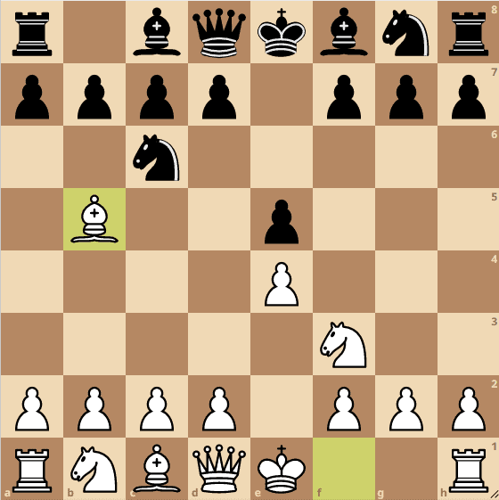
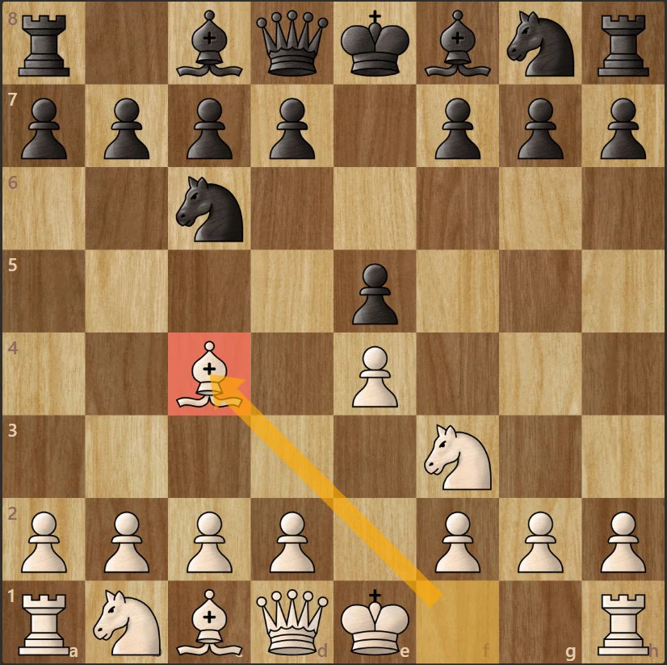

Master the three critical stages of the royal game
The main goal of the opening is to get your army out safely and stake a claim in the center of the board. Keep these rules memorized:
One of the oldest and most deeply analyzed openings in chess, emphasizing rapid development and long-term structural pressure.
1. e4 e5 2. Nf3 Nc6 3. Bb5
Focuses on controlling the center immediately and targeting Black's weak f7 square with the light-squared bishop.
1. e4 e5 2. Nf3 Nc6 3. Bc4
White offers a flank pawn to trade for a central black pawn, looking to secure full ownership of the center squares.
1. d4 d5 2. c4An aggressive, asymmetrical response to 1.e4. Black fights for the center using a flank pawn, leading to sharp, tactical games.
1. e4 c5A solid, counter-attacking opening. Black accepts a temporarily cramped position in exchange for a rock-solid pawn chain.
1. e4 e6Similar to the French but considered safer, as Black aims to challenge White's e4 pawn without blocking in their light-squared bishop.
1. e4 c6Once the pieces are out, the real strategic battle begins. Use these tips to formulate better plans:
Middlegames are heavily decided by short, explosive patterns called tactics. Here are the big three you must watch out for:
When a single piece attacks two or more opponent pieces at the exact same time. Knights are notoriously lethal at executing forks.
When an attacking piece restricts an opponent's piece from moving because doing so would expose a much more valuable target (like the King or Queen) behind it.
The reverse of a pin. An attacking piece hits a valuable target (like a King) which is forced to move out of the way, exposing a less valuable piece behind it to be captured.
With fewer pieces on the board, the rules change entirely. Keep these principles in mind:
When two Kings face each other with only one square between them, the player *not* having to move has the "opposition". Knowing how to use opposition determines whether you can guide a pawn safely to promotion or force a draw.
The most common major endgame structure. The Lucena position is known as the "bridge building" technique, where a player uses their Rook to shield their King from enemy checks so a passed pawn can step up and promote.
The ultimate defensive endgame setup for drawing a Rook and Pawn vs Rook match. By cutting off the enemy King along the 3rd or 6th rank, you can secure an absolute draw every time.